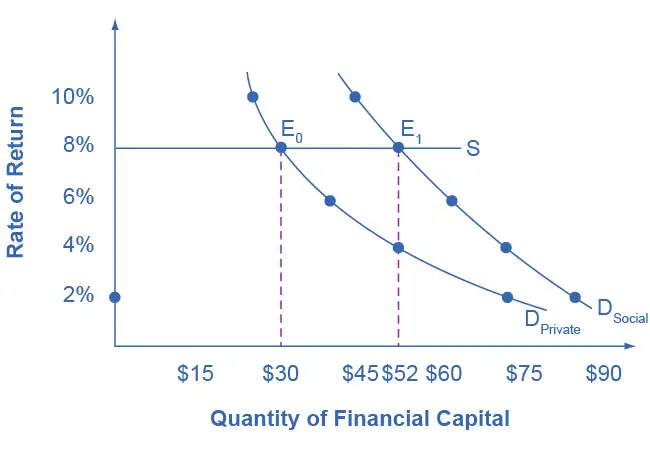
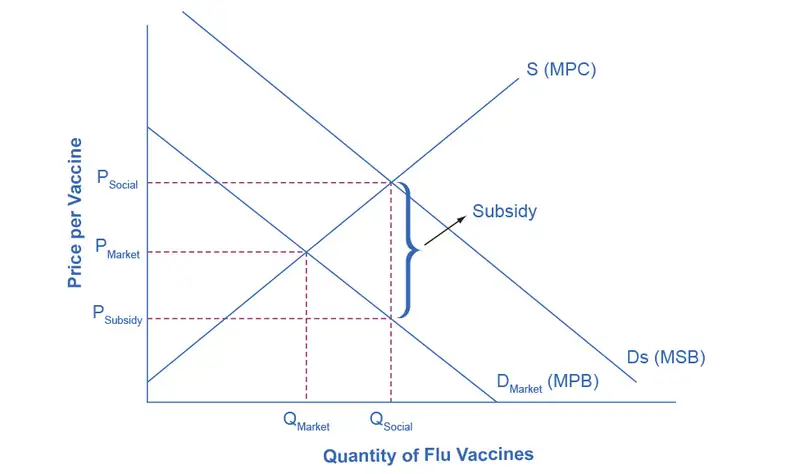

Chapter 13: Positive Externalities and Public Goods¶
Introduction¶
Bring It Home: The Benefits of Voyager I Endure
The rapid growth of technology has increased our ability to access and process data, to navigate through a busy city, and to communicate with friends on the other side of the globe. The research and development efforts of citizens, scientists, firms, universities, and governments have truly revolutionized the modern economy. To get a sense of how far we have come in a short period of time, let’s compare one of humankind’s greatest achievements to the smartphone.
In 1977 the United States launched Voyager I, a spacecraft originally intended to reach Jupiter and Saturn, to send back photographs and other cosmic measurements. Voyager I, however, kept going, and going—past Jupiter and Saturn—right out of our solar system. At the time of its launch, Voyager had some of the most sophisticated computing processing power NASA could engineer (8,000 instructions per second), but today, we Earthlings use handheld devices that can process 14 billion instructions per second.
Still, the technology of today is a spillover product of the incredible feats NASA accomplished over forty years ago. NASA research, for instance, is responsible for the kidney dialysis and mammogram machines that we use today. Research in new technologies not only produces private benefits to the investing firm, or in this case to NASA, but it also creates benefits for the broader society. In this way, new knowledge often becomes what economists refer to as a public good. This leads us to the topic of this chapter—technology, positive externalities, public goods, and the role of government in encouraging innovation and the social benefits that it provides.
Chapter Outline: Introduction to Positive Externalities and Public Goods
In this chapter, you will learn about:
- Why the Private Sector Underinvests in Technologies
- How Governments Can Encourage Innovation
- Public Goods
As economist Mariana Mazzucato explores in her well-known work The Entrepreneurial State, what makes a smartphone smart? What allows its apps to help you navigate new towns while getting updates about your home, all while your hands are on the steering wheel and your children are in the back seat watching their shows? For starters, the internet, cell tower networks, GPS, and voice activation. Each of these, and many other technologies we rely on, were developed with intensive government support. For example, GPS, which enables many cell phone functions beyond the frequently used mapping and ride-sharing applications, was developed by the U.S. Department of Defense over several generations of satellite tracking and complex computer algorithm development. The U.S. government still provides GPS for many of the world’s users.
We do not often think of the government when we consider our leading products and entrepreneurs. We think of Apple, Google, Lyft, Tesla, Fitbit, and so on—creative innovators who built on the tools provided by these government efforts, using them in transformative ways. We may not think of the estimated $19 billion per year that the U.S. spends to maintain the GPS system, but we would certainly think of it if it suddenly went away. (Beyond the impact on our daily lives, economists estimate U.S. businesses alone would lose about $1 billion per day without GPS.)
Mazzucato is one of several prominent economists advocating for an embrace of continued government-sponsored innovations in order to build economic prosperity, reduce inequality, and manage ongoing challenges such as drought, coastal changes, and extreme weather. She argues that competitive, private sector markets are often resistant to the risks involved with large-scale innovation, because failed experiments and lack of uptake lead to massive corporate and personal losses. Governments can take on riskier research and development projects. Because government spending is fueled by taxpayers, and all innovation leads to some level of employment change, these proposals are certainly complex and challenging to implement.
This chapter deals with some of these issues: Will private companies be willing to invest in new technology? In what ways does new technology have positive externalities? What motivates inventors? What role should government play in encouraging research and technology? Are there certain types of goods that markets fail to provide efficiently, and that only government can produce? What happens when consumption or production of a product creates positive externalities? Why is it unsurprising when we overuse a common resource, like marine fisheries?
13.1 Investments in Innovation¶
Learning Objectives
By the end of this section, you will be able to:
- Identify the positive externalities of new technology.
- Explain the difference between private benefits and social benefits and give examples of each.
- Calculate and analyze rates of return
Market competition can provide an incentive for discovering new technology because a firm can earn higher profits by finding a way to produce products more cheaply or to create products with characteristics consumers want. As Gregory Lee, CEO of Samsung said, “Relentless pursuit of new innovation is the key principle of our business and enables consumers to discover a world of possibilities with technology.” An innovative firm knows that it will usually have a temporary edge over its competitors and thus an ability to earn above-normal profits before competitors can catch up.
In certain cases, however, competition can discourage new technology, especially when other firms can quickly copy a new idea. Consider a pharmaceutical firm deciding to develop a new drug. On average, it can cost $800 million and take more than a decade to discover a new drug, perform the necessary safety tests, and bring the drug to market. If the research and development (R&D) effort fails—and every R&D project has some chance of failure—then the firm will suffer losses and could even be driven out of business. If the project succeeds, then the firm’s competitors may figure out ways of adapting and copying the underlying idea, but without having to pay the costs themselves. As a result, the innovative company will bear the much higher costs of the R&D and will enjoy at best only a small, temporary advantage over the competition.
Many inventors over the years have discovered that their inventions brought them less profit than they might have reasonably expected.
- Eli Whitney (1765–1825) invented the cotton gin, but then southern cotton planters built their own seed-separating devices with a few minor changes in Whitney’s design. When Whitney sued, he found that the courts in southern states would not uphold his patent rights.
- Thomas Edison (1847–1931) still holds the record for most patents granted to an individual. His first invention was an automatic vote counter, and despite the social benefits, he could not find a government that wanted to buy it.
- Gordon Gould came up with the idea behind the laser in 1957. He put off applying for a patent and, by the time he did apply, other scientists had laser inventions of their own. A lengthy legal battle resulted, in which Gould spent $100,000 on lawyers, before he eventually received a patent for the laser in 1977. Compared to the enormous social benefits of the laser, Gould received relatively little financial reward.
- In 1936, Alan Turing delivered a paper titled, "On Computable Numbers, with an Application to the Entscheidungsproblem," in which he presented the notion of a universal machine (later called the “Universal Turing Machine," and then the "Turing machine") capable of computing anything that is computable. The central concept of the modern computer was based on Turing’s paper. Today scholars widely consider Turing as the father of theoretical computer science and artificial intelligence; however, the UK government prosecuted Turing in 1952 for engaging in same-sex sexual acts and gave him the choice of chemical castration or prison. Turing chose castration and died in 1954 from cyanide poisoning.
A variety of studies by economists have found that the original inventor receives one-third to one-half of the total economic benefits from innovations, while other businesses and new product users receive the rest.
The Positive Externalities of New Technology¶
Will private firms in a market economy underinvest in research and technology? If a firm builds a factory or buys a piece of equipment, the firm receives all the economic benefits that result from the investments. However, when a firm invests in new technology, the private benefits, or profits, that the firm receives are only a portion of the overall social benefits. The social benefits of an innovation account for the value of all the positive externalities of the new idea or product, whether enjoyed by other companies or society as a whole, as well as the private benefits the firm that developed the new technology receives. As you learned in Environmental Protection and Negative Externalities, positive externalities are beneficial spillovers to a third party, or parties.
Consider the example of the Big Drug Company, which is planning its R&D budget for the next year. Economists and scientists working for Big Drug have compiled a list of potential research and development projects and estimated rates of return. (The rate of return is the estimated payoff from the project.) Figure 13.2 shows how the calculations work. The downward-sloping DPrivate curve represents the firm’s demand for financial capital and reflects the company’s willingness to borrow to finance research and development projects at various interest rates. Suppose that this firm’s investment in research and development creates a spillover benefit to other firms and households. After all, new innovations often spark other creative endeavors that society also values. If we add the spillover benefits society enjoys to the firm’s private demand for financial capital, we can draw DSocial that lies above DPrivate.
If there were a way for the firm to fully monopolize those social benefits by somehow making them unavailable to the rest of us, the firm’s private demand curve would be the same as society’s demand curve. According to Figure 13.2 and Table 13.1, if the going rate of interest on borrowing is 8%, and the company can receive the private benefits of innovation only, then the company would finance $30 million. Society, at the same rate of 8%, would find it optimal to have $52 million of borrowing. Unless there is a way for the company to fully enjoy the total benefits, then it will borrow less than the socially optimal level of $52 million.

Table 13.1 Return and Demand for Capital
| Rate of Return | DPrivate (in millions) | DSocial (in millions) |
|---|---|---|
| 2% | $72 | $84 |
| 4% | $52 | $72 |
| 6% | $38 | $62 |
| 8% | $30 | $52 |
| 10% | $26 | $44 |
Big Drug’s original demand for financial capital (DPrivate) is based on the profits the firm receives. However, other pharmaceutical firms and health care companies may learn new lessons about how to treat certain medical conditions and are then able to create their own competing products. The social benefit of the drug takes into account the value of all the drug's positive externalities. If Big Drug were able to gain this social return instead of other companies, its demand for financial capital would shift to the demand curve DSocial, and it would be willing to borrow and invest $52 million. However, if Big Drug is receiving only 50 cents of each dollar of social benefits, the firm will not spend as much on creating new products. The amount it would be willing to spend would fall somewhere in between DPrivate and DSocial.
Why Invest in Human Capital?¶
The investment in anything, whether it is the construction of a new power plant or research in a new cancer treatment, usually requires a certain upfront cost with an uncertain future benefit. The investment in education, or human capital, is no different. Over the span of many years, a student and her family invest significant amounts of time and money into that student’s education. The idea is that higher levels of educational attainment will eventually serve to increase the student’s future productivity and subsequent ability to earn. Once the student crunches the numbers, does this investment pay off for her?
Almost universally, economists have found that the answer to this question is a clear “Yes.” For example, several studies of the return to education in the United States estimate that the rate of return to a college education is approximately 10-15%. Data in Table 13.2, from the U.S. Bureau of Labor Statistics’ Usual Weekly Earnings of Wage and Salary Workers, Fourth Quarter 2021, demonstrate that median weekly earnings are higher for workers who have completed more education. While these rates of return will beat equivalent investments in Treasury bonds or savings accounts, the estimated returns to education go primarily to the individual worker, so these returns are private rates of return to education.
Table 13.2 Usual Weekly Earnings of Wage and Salary Workers, Fourth Quarter 2021 (Source: https://www.bls.gov/news.release/pdf/wkyeng.pdf)
| Less than a High School Degree | High School Degree, No College | Bachelor's Degree or Higher | |
|---|---|---|---|
| Median Weekly Earnings (full-time workers over the age of 25) | $651 | $831 | $1,467 |
What does society gain from investing in the education of another student? After all, if the government is spending taxpayer dollars to subsidize public education, society should expect some kind of return on that spending. Economists like George Psacharopoulos have found that, across a variety of nations, the social rate of return on schooling is also positive. After all, positive externalities exist from investment in education. While not always easy to measure, according to Walter McMahon, the positive externalities to education typically include better health outcomes for the population, lower levels of crime, a cleaner environment and a more stable, democratic government. For these reasons, many nations have chosen to use taxpayer dollars to subsidize primary, secondary, and higher education. Education clearly benefits the person who receives it, but a society where most people have a good level of education provides positive externalities for all.
Other Examples of Positive Externalities¶
Although technology may be the most prominent example of a positive externality, it is not the only one. For example, vaccinations against disease are not only a protection for the individual, but they have the positive spillover of protecting others who may become infected. When a number of homes in a neighborhood are modernized, updated, and restored, not only does it increase the homes' value, but other property values in the neighborhood may increase as well.
The appropriate public policy response to a positive externality, like a new technology, is to help the party creating the positive externality receive a greater share of the social benefits. In the case of vaccines, like flu shots, an effective policy might be to provide a subsidy to those who choose to get vaccinated.
Figure 13.3 shows the market for flu shots. The market demand curve DMarket for flu shots reflects only the marginal private benefits (MPB) that the vaccinated individuals receive from the shots. Assuming that there are no spillover costs in the production of flu shots, the market supply curve is given by the marginal private cost (MPC) of producing the vaccinations.
The equilibrium quantity of flu shots produced in the market, where MPB is equal to MPC, is QMarket and the price of flu shots is PMarket. However, spillover benefits exist in this market because others, those who chose not to purchase a flu shot, receive a positive externality in the form of a reduced chance of contracting the flu. When we add the spillover benefits to the marginal private benefit of flu shots, the marginal social benefit (MSB) of flu shots is given by DSocial. Because the MSB is greater than MPB, we see that the socially optimal level of flu shots is greater than the market quantity (QSocial exceeds QMarket) and the corresponding price of flu shots, if the market were to produce QSocial, would be at PSocial. Unfortunately, the marketplace does not recognize the positive externality and flu shots will go under-produced and under-consumed.
How can government try to move the market level of output closer to the socially desirable level of output? One policy would be to provide a subsidy, like a voucher, to any citizen who wishes to get vaccinated. This voucher would act as “income” that one could use to purchase only a flu shot and, if the voucher were exactly equal to the per-unit spillover benefits, would increase market equilibrium to a quantity of QSocial and a price of PSocial where MSB equals MSC (which equals MPC given the assumption that there are no spillover costs in producing the vaccine). Suppliers of the flu shots would receive payment of PSocial per vaccination, while consumers of flu shots would redeem the voucher and only pay a price of PSubsidy. When the government uses a subsidy in this way, it produces the socially optimal quantity of vaccinations.

Societal Change as an Innovation Outcome¶
Economist Carlota Perez draws on the lessons of past innovations to understand the current state of our economy. She demonstrates that prior technological turning points, such as the proliferation of railroads and the emergence of mass production, created initial periods of employment and wealth shifting but eventually led to greater well-being and economic growth. After difficult transition periods and sometimes economic meltdowns during the “installment” phase of widespread new technologies, many economies and the people within them have benefited from prolonged periods of economic and lifestyle improvement, including lower unemployment and better quality of life.
Most prior innovation periods, such as the Industrial Revolution, had one significant downside: negative impacts on the environment, such as pollution and habitat destruction. Perez notes that our current revolution—in information and communications technology (ICT)—has the potential for significant positive externalities related to the environment. ICT is shifting many areas of society (and therefore industry) to digital experiences and services that do not require fossil fuels or similar natural resources. Vehicle sharing, product rental-reuse networks, and new manufacturing methods offer the promise of far less consumable consumption. And even though the appearance of delivery trucks and shipping boxes gives the impression of environmental damage, most studies indicate that online shopping is better for the environment than individuals shopping in person. (This is partly attributed to greater efficiency in a few trucks driving to a neighborhood rather than everyone in the neighborhood driving to several stores.) Consumers and governments can spur on those environmental benefits by choosing or partnering with companies that focus on furthering their environmental impact, such as by using solar power to fuel their computer servers or by using electrically powered delivery trucks.
Like other innovations, ICT has created some employment and economic opportunities while it has reduced others. Increased globalization and efficiencies have shuttered businesses and reduced wages in some areas. Perez’s research indicates that those types of employment shifts can be managed through proper regulation and investment (especially in human capital), particularly as firms in the relevant industries become mature and profitable. The prospects aren’t simple: ICT has created megafirms like Amazon and Apple, which despite pleasing their consumers can wield significant power over governments and employees. But on the environmental and societal front at least, ICT has offered a wealth of opportunities and externalities.
13.2 How Governments Can Encourage Innovation¶
Learning Objectives
By the end of this section, you will be able to:
- Explain the effects of intellectual property rights on social and private rates of return.
- Identify three U.S. Government policies and explain how they encourage innovation
A number of different government policies can increase the incentives to innovate, including: guaranteeing intellectual property rights, government assistance with the costs of research and development, and cooperative research ventures between universities and companies.
Intellectual Property Rights¶
One way to increase new technology is to guarantee the innovator an exclusive right to that new product or process. Intellectual property rights include patents, which give the inventor the exclusive legal right to make, use, or sell the invention for a limited time, and copyright laws, which give the author an exclusive legal right over works of literature, music, film/video, and pictures. For example, if a pharmaceutical firm has a patent on a new drug, then no other firm can manufacture or sell that drug for 20 years, unless the firm with the patent grants permission. Without a patent, the pharmaceutical firm would have to face competition for any successful products, and could earn no more than a normal rate of profit. With a patent, a firm is able to earn monopoly profits on its product for a period of time—which offers an incentive for research and development. In general, how long can “a period of time” be? The Clear It Up discusses patent and copyright protection timeframes for some works you might know.
Clear It Up: How long is Mickey Mouse protected from being copied?
All patents and copyrights are scheduled to end someday. In 2003, copyright protection for Mickey Mouse was scheduled to run out. Once the copyright had expired, anyone would be able to copy Mickey Mouse cartoons or draw and sell new ones. In 1998, however, Congress passed the Sonny Bono Copyright Term Extension Act. For copyrights owned by companies or other entities, it increased or extended the copyright from 75 years to 95 years after publication. For copyrights owned by individuals, it increased or extended the copyright coverage from 50 years to 70 years after death. Along with protecting Mickey for another 20 years, the copyright extension affected about 400,000 books, movies, and songs.
Figure 13.4 illustrates how the total number of patent applications filed with the U.S. Patent and Trademark Office, as well as the total number of patents granted, surged in the mid-1990s with the invention of the internet, and is still going strong today.
![This is a bar graph illustrating the number of patents filed and patents granted over time. The y-axis shows the number of patents, from 0 to 700,000, in increments of 100,000. The x-axis shows years from 1990 to 2020. In 1990, around 190,000 patents were filed, and 100,000 were granted. Generally the number of patents filed increases each year, to around 650,000 in 2020. While the number of patents granted increases, to nearly 400,000 in 2020, it does not grow at the same rate as the increase in the number of patents filed.](img/cnx-econ3ev1-2-c13-04.webp)
While patents provide an incentive to innovate by protecting the innovator, they are not perfect. For example:
- In countries that already have patents, economic studies show that inventors receive only one-third to one-half of the total economic value of their inventions.
- In a fast-moving high-technology industry like biotechnology or semiconductor design, patents may be almost irrelevant because technology is advancing so quickly.
- Not every new idea can be protected with a patent or a copyright—for example, a new way of organizing a factory or a new way of training employees.
- Patents may sometimes cover too much or be granted too easily. In the early 1970s, Xerox had received over 1,700 patents on various elements of the photocopy machine. Every time Xerox improved the photocopier, it received a patent on the improvement.
- The 20-year time period for a patent is somewhat arbitrary. Ideally, a patent should cover a long enough period of time for the inventor to earn a good return, but not so long that it allows the inventor to charge a monopoly price permanently.
Because patents are imperfect and do not apply well to all situations, alternative methods of improving the rate of return for inventors of new technology are desirable. The following sections describe some of these possible alternative policies.
Policy #1: Government Spending on Research and Development¶
If the private sector does not have sufficient incentive to carry out research and development, one possibility is for the government to fund such work directly. Government spending can provide direct financial support for research and development (R&D) conducted at colleges and universities, nonprofit research entities, and sometimes by private firms, as well as at government-run laboratories. While government spending on research and development produces technology that is broadly available for firms to use, it costs taxpayers money and can sometimes be directed more for political than for scientific or economic reasons.
Link It Up
Visit the NASA website and the USDA website to read about government research that would not take place were it left to firms, due to the externalities.
The first column of Table 13.3 shows the sources of total U.S. spending on research and development. The second column shows the total dollars of R&D funding by each source. The third column shows that, relative to the total amount of funding, 22.7% comes from the federal government, about 69% of R&D is done by industry, and less than 4% is done by universities and colleges. (The percentages below do not add up to exactly 100% due to rounding.)
Table 13.3 U.S. Research and Development Expenditures, 2018 (Source: https://ncses.nsf.gov/pubs/nsf21324)
| Sources of R&D Funding | Amount ($ billions) | Percent of the Total |
|---|---|---|
| Federal government | $129.6 | 21.4% |
| Industry | $426.0 | 70.3% |
| Universities and colleges | $20.7 | 3.4% |
| Nonprofits | $25.0 | 4.1% |
| Nonfederal government | $4.8 | 0.8% |
| Total | $606.1 |
In the 1960s the federal government paid for about two-thirds of the nation’s R&D. Over time, the U.S. economy has come to rely much more heavily on industry-funded R&D. The federal government has tried to focus its direct R&D spending on areas where private firms are not as active. One difficulty with direct government support of R&D is that it inevitably involves political decisions about which projects are worthy. The scientific question of whether research is worthwhile can easily become entangled with considerations like the location of the congressional district in which the research funding is spent.
Policy #2: Tax Breaks for Research and Development¶
A complementary approach to supporting R&D that does not involve the government’s close scrutiny of specific projects is to give firms a reduction in taxes depending on how much research and development they do. The federal government refers to this policy as the research and experimentation (R&E) tax credit. According to the Treasury Department: “. . . the R&E Credit is also a cost-effective policy for stimulating additional private sector investment. Most recent studies find that each dollar of foregone tax revenue through the R&E Tax Credit causes firms to invest at least a dollar in R&D, with some studies finding a benefit to cost ratio of 2 or 2.96.”
Link It Up
Visit this website for more information on how the R&E Tax Credit encourages investment.
Policy #3 Cooperative Research¶
State and federal governments support research in a variety of ways. For example, United for Medical Research, a coalition of groups that seek funding for the National Institutes of Health, (which is supported by federal grants), states: “NIH-supported research added $69 billion to our GDP and supported seven million jobs in 2011 alone.” The United States remains the leading sponsor of medical-related research, spending $117 billion in 2011. Other institutions, such as the National Academy of Sciences and the National Academy of Engineering, receive federal grants for innovative projects. The Agriculture and Food Research Initiative (AFRI) at the United States Department of Agriculture awards federal grants to projects that apply the best science to the most important agricultural problems, from food safety to childhood obesity. Cooperation between government-funded universities, academies, and the private sector can spur product innovation and create whole new industries.
13.3 Public Goods¶
Learning Objectives
By the end of this section, you will be able to:
- Identify a public good using nonexcludable and non-rival as criteria
- Explain the free rider problem
- Identify several sources of public goods
Even though new technology creates positive externalities so that perhaps one-half or two-thirds of the social benefit of new inventions spills over to others, the inventor still receives some private return. What about a situation where the positive externalities are so extensive that private firms could not expect to receive any of the social benefit? We call this kind of good a public good. Spending on national defense is a good example of a public good. Let’s begin by defining the characteristics of a public good and discussing why these characteristics make it difficult for private firms to supply public goods. Then we will see how government may step in to address the issue.
The Definition of a Public Good¶
Economists have a strict definition of a public good, and it does not necessarily include all goods financed through taxes. To understand the defining characteristics of a public good, first consider an ordinary private good, like a piece of pizza. We can buy and sell a piece of pizza fairly easily because it is a separate and identifiable item. However, public goods are not separate and identifiable in this way.
Instead, public goods have two defining characteristics: they are nonexcludable and non-rival. The first characteristic, that a public good is nonexcludable, means that it is costly or impossible to exclude someone from using the good. If Larry buys a private good like a piece of pizza, then he can exclude others, like Lorna, from eating that pizza. However, if national defense is provided, then it includes everyone. Even if you strongly disagree with America’s defense policies or with the level of defense spending, the national defense still protects you. You cannot choose to be unprotected, and national defense cannot protect everyone else and exclude you.
The second main characteristic of a public good, that it is non-rival, means that when one person uses the public good, another can also use it. With a private good like pizza, if Max is eating the pizza then Michelle cannot also eat it; that is, the two people are rivals in consumption. With a public good like national defense, Max’s consumption of national defense does not reduce the amount left for Michelle, so they are non-rival in this area.
A number of government services are examples of public goods. For instance, it would not be easy to provide fire and police service so that some people in a neighborhood would be protected from the burning and burglary of their property, while others would not be protected at all. Protecting some necessarily means protecting others, too.
Positive externalities and public goods are closely related concepts. Public goods have positive externalities, like police protection or public health funding. Not all goods and services with positive externalities, however, are public goods. Investments in education have huge positive spillovers but can be provided by a private company. Private companies can invest in new inventions such as the Apple iPad and reap profits that may not capture all of the social benefits. We can also describe patents as an attempt to make new inventions into private goods, which are excludable and rivalrous, so that no one but the inventor can use them during the length of the patent.
The Free Rider Problem of Public Goods¶
Private companies find it difficult to produce public goods. If a good or service is nonexcludable, like national defense, so that it is impossible or very costly to exclude people from using this good or service, then how can a firm charge people for it?
Link It Up
Visit this website to read about a connection between free riders and “bad music.”
When individuals make decisions about buying a public good, a free rider problem can arise, in which people have an incentive to let others pay for the public good and then to “free ride” on the purchases of others. We can express the free rider problem in terms of the prisoner’s dilemma game, which we discussed as a representation of oligopoly in Monopolistic Competition and Oligopoly.
There is a dilemma with the Prisoner’s Dilemma, though. See the Work It Out feature.
Work It Out: The Problem with the Prisoner’s Dilemma
Suppose two people, Rachel and Samuel, are considering purchasing a public good. The difficulty with the prisoner’s dilemma arises as each person thinks through their strategic choices.
Step 1. Rachel reasons in this way: If Samuel does not contribute, then I would be a fool to contribute. However, if Samuel does contribute, then I can come out ahead by not contributing.
Step 2. Either way, I should choose not to contribute, and instead hope that I can be a free rider who uses the public good paid for by Samuel.
Step 3. Samuel reasons the same way about Rachel.
Step 4. When both people reason in that way, the public good never gets built, and there is no movement to the option where everyone cooperates—which is actually best for all parties.
The Role of Government in Paying for Public Goods¶
The key insight in paying for public goods is to find a way of assuring that everyone will make a contribution and to prevent free riders. For example, if people come together through the political process and agree to pay taxes and make group decisions about the quantity of public goods, they can defeat the free rider problem by requiring, through the law, that everyone contributes.
However, government spending and taxes are not the only way to provide public goods. In some cases, markets can produce public goods. For example, think about radio. It is nonexcludable, since once the radio signal is broadcast, it would be very difficult to stop someone from receiving it. It is non-rival, since one person listening to the signal does not prevent others from listening as well. Because of these features, it is practically impossible to charge listeners directly for listening to conventional radio broadcasts.
Radio has found a way to collect revenue by selling advertising, which is an indirect way of “charging” listeners by taking up some of their time. Ultimately, consumers who purchase the goods advertised are also paying for the radio service, since the station builds in the cost of advertising into the product cost. In a more recent development, satellite radio companies, such as SiriusXM, charge a regular subscription fee for streaming music without commercials. In this case, however, the product is excludable—only those who pay for the subscription will receive the broadcast.
Some public goods will also have a mixture of public provision at no charge along with fees for some purposes, like a public city park that is free to use, but the government charges a fee for parking your car, for reserving certain picnic grounds, and for food sold at a refreshment stand.
Link It Up
Read this article to find out what economists say the government should pay for.
In other cases, we can use social pressures and personal appeals, rather than the force of law, to reduce the number of free riders and to collect resources for the public good. For example, neighbors sometimes form an association to carry out beautification projects or to patrol their area after dark to discourage crime. In low-income countries, where social pressure strongly encourages all farmers to participate, farmers in a region may come together to work on a large irrigation project that will benefit all. We can view many fundraising efforts, including raising money for local charities and for the endowments of colleges and universities, as an attempt to use social pressure to discourage free riding and to generate the outcome that will produce a public benefit.
Common Resources and the “Tragedy of the Commons”¶
There are some goods that do not fall neatly into the categories of private good or public good. While it is easy to classify a pizza as a private good and a city park as a public good, what about an item that is nonexcludable and rivalrous, such as the queen conch?
In the Caribbean, the queen conch is a large marine mollusk that lives in shallow waters of sea grass. These waters are so shallow, and so clear, that a single diver may harvest many conch in a single day. Not only is conch meat a local delicacy and an important part of the local diet, but artists use the large ornate shells and craftsmen transform them. Because almost anyone with a small boat, snorkel, and mask, can participate in the conch harvest, it is essentially nonexcludable. At the same time, fishing for conch is rivalrous. Once a diver catches one conch another diver cannot catch it.
We call goods that are nonexcludable and rivalrous common resources. Because the waters of the Caribbean are open to all conch fishermen, and because any conch that you catch is a conch that I cannot catch, fishermen tend to overharvest common resources like the conch.
The problem of overharvesting common resources is not a new one, but ecologist Garret Hardin put the tag “tragedy of the commons” to the problem in a 1968 article in the magazine Science. Economists view this as a problem of property rights. Since nobody owns the ocean, or the conch that crawl on the sand beneath it, no one individual has an incentive to protect that resource and responsibly harvest it. To address the issue of overharvesting conch and other marine fisheries, economists have advocated simple devices like fishing licenses, harvest limits, and shorter fishing seasons. One approach that has been turned to more recently is the implementation of catch shares, whereby regulators establish a total allowable catch, and then fishermen are allocated a portion of that total allowable catch. Catch shares appear to slow the race to fish. When the population of a species drops to critically low numbers, governments have even banned the harvest until biologists determine that the population has returned to sustainable levels. In fact, such is the case with the conch, the harvesting of which the government has effectively banned in the United States since 1986.
The tragedy of the commons is a frequent economic and social framework for discussions about a range of common resources, even extending into digital resources such as open media repositories and online libraries. Prominent economist Elinor Ostrom, the first woman to receive the Nobel Prize in Economics, proposed an alternate version, sometimes referred to as the "non-tragedy of the commons." After extensive fieldwork in areas as diverse as Indonesia, Kenya, Maine (U.S.), and Nepal, she challenged the notion that people would only avoid depletion of common resources if they were forced to by regulatory laws and property rights. She noted that farmers working shared land could communicate and cooperate in order to maximize and preserve the fields over time. She argued that when those who benefit most from a resource are in close proximity to it (like a farm field that directly serves a town), the resource is better managed without external influence.
Link It Up
Visit this website for more on the queen conch industry.
Positive Externalities in Public Health Programs¶
One of the most remarkable changes in the standard of living in the last several centuries is that people are living longer. Scientists believe that, thousands of years ago, human life expectancy ranged between 20 to 30 years. By 1900, average life expectancy in the United States was 47 years. By 2015, life expectancy was 79 years; due to COVID-19, life expectancy declined slightly to 77 years in 2020. Most of the gains in life expectancy in the history of the human race happened in the twentieth century.
The rise in life expectancy seems to stem from three primary factors. First, systems for providing clean water and disposing of human waste helped to prevent the transmission of many diseases. Second, changes in public behavior have advanced health. Early in the twentieth century, for example, people learned the importance of boiling bottles before using them for food storage and baby’s milk, washing their hands, and protecting food from flies. More recent behavioral changes include reducing the number of people who smoke tobacco and precautions to limit sexually transmitted diseases. Third, medicine has played a large role. Scientists developed immunizations for diphtheria, cholera, pertussis, tuberculosis, tetanus, and yellow fever between 1890 and 1930. Penicillin, discovered in 1941, led to a series of other antibiotic drugs for bringing infectious diseases under control. In recent decades, drugs that reduce the risks of high blood pressure have had a dramatic effect in extending lives.
These advances in public health have all been closely linked to positive externalities and public goods. Public health officials taught hygienic practices to mothers in the early 1900s and encouraged less smoking in the late 1900s. Government funded many public sanitation systems and storm sewers because they have the key traits of public goods. In the twentieth century, many medical discoveries emerged from government or university-funded research. Patents and intellectual property rights provided an additional incentive for private inventors. The reason for requiring immunizations, phrased in economic terms, is that it prevents spillovers of illness to others—as well as helping the person immunized.
Bring It Home: The Benefits of Voyager I Endure
While we applaud the technology spillovers of NASA’s space projects, we should also acknowledge that those benefits are not shared equally. Economists like Tyler Cowen, a professor at George Mason University, are seeing increasing evidence of a widening gap between those who have access to rapidly improving technology, and those who do not. According to Cowen, author of the 2013 book, Average Is Over: Powering America Beyond the Age of the Great Stagnation, this inequality in access to technology and information is going to deepen the inequality in skills, and ultimately, in wages and global standards of living.
Chapter Review¶
Key Terms¶
- external benefits (or positive externalities)
- beneficial spillovers to a third party of parties, who did not purchase the good or service that provided the externalities
- free rider
- those who want others to pay for the public good and then plan to use the good themselves; if many people act as free riders, the public good may never be provided
- intellectual property
- the body of law including patents, trademarks, copyrights, and trade secret law that protect the right of inventors to produce and sell their inventions
- nonexcludable
- when it is costly or impossible to exclude someone from using the good, and thus hard to charge for it
- nonrivalrous
- even when one person uses the good, others can also use it
- positive externalities
- beneficial spillovers to a third party or parties
- private benefits
- the benefits a person who consumes a good or service receives, or a new product's benefits or process that a company invents that the company captures
- private rates of return
- when the estimated rates of return go primarily to an individual; for example, earning interest on a savings account
- public good
- good that is nonexcludable and non-rival, and thus is difficult for market producers to sell to individual consumers
- social benefits
- the sum of private benefits and external benefits
- social rate of return
- when the estimated rates of return go primarily to society; for example, providing free education
Key Concepts and Summary¶
13.1 Investments in Innovation¶
Competition creates pressure to innovate. However, if one can easily copy new inventions, then the original inventor loses the incentive to invest further in research and development. New technology often has positive externalities; that is, there are often spillovers from the invention of new technology that benefit firms other than the innovator. The social benefit of an invention, once the firm accounts for these spillovers, typically exceeds the private benefit to the inventor. If inventors could receive a greater share of the broader social benefits for their work, they would have a greater incentive to seek out new inventions.
13.2 How Governments Can Encourage Innovation¶
Public policy with regard to technology must often strike a balance. For example, patents provide an incentive for inventors, but they should be limited to genuinely new inventions and not extend forever.
Government has a variety of policy tools for increasing the rate of return for new technology and encouraging its development, including: direct government funding of R&D, tax incentives for R&D, protection of intellectual property, and forming cooperative relationships between universities and the private sector.
13.3 Public Goods¶
A public good has two key characteristics: it is nonexcludable and non-rival. Nonexcludable means that it is costly or impossible for one user to exclude others from using the good. Non-rival means that when one person uses the good, it does not prevent others from using it. Markets often have a difficult time producing public goods because free riders will attempt to use the public good without paying for it. One can overcome the free rider problem through measures to assure that users of the public good pay for it. Such measures include government actions, social pressures, and specific situations where markets have discovered a way to collect payments.
Self-Check Questions¶
13.1 Investments in Innovation¶
1. Do market demand curves reflect positive externalities? Why or why not?
Answer
No. A market demand curve reflects only the private benefits of those who are consuming the product. Positive externalities are benefits that spill over to third parties, so they create social benefits, and are not captured by a market (or private benefit) demand curve.
2. Suppose that Sony's R&D investment in digital devices has increased profits by 20%. Is this a private or social benefit?
Answer
Clearly Samsung is benefiting from the investment, so the 20% increase in profits is a private benefit. If Samsung is unable to capture all of the benefit, perhaps because other companies quickly copy and produce close substitutes, then Samsung’s investment will produce social benefits.
3. The Gizmo Company is planning to develop new household gadgets. Table 13.4 shows the company’s demand for financial capital for research and development of these gadgets, based on expected rates of return from sales. Now, say that every investment would have an additional 5% social benefit—that is, an investment that pays at least a 6% return to the Gizmo Company will pay at least an 11% return for society as a whole; an investment that pays at least 7% for the Gizmo Company will pay at least 12% for society as a whole, and so on. Answer the questions that follow based on this information.
Table 13.4
| Estimated Rate of Return | Private profits of the firm from an R&D project (in $ millions) |
|---|---|
| 10% | $100 |
| 9% | $102 |
| 8% | $108 |
| 7% | $118 |
| 6% | $133 |
| 5% | $153 |
| 4% | $183 |
| 3% | $223 |
- If the going interest rate is 9%, how much will Gizmo invest in R&D if it receives only the private benefits of this investment?
- Assume that the interest rate is still 9%. How much will the firm invest if it also receives the social benefits of its investment? (Add an additional 5% return on all levels of investment.)
Answer
- $102 million.
- If the interest rate is 9%, the cost of financial capital, and the firm can capture the 5% return to society, the firm would invest as if its effective rate of return is 4%, so it will invest $183 million.
4. The Junkbuyers Company travels from home to home, looking for opportunities to buy items that would otherwise end up with the garbage, but which the company can resell or recycle. Which will be larger, the private or the social benefits?
Answer
When the Junkbuyers Company purchases something for resale, presumably both the buyer and the seller benefit—otherwise, they would not need to make the transaction. However, the company also reduces the amount of garbage produced, which saves money for households and/or for the city that disposes of garbage. So the social benefits are larger than the private benefits.
13.2 How Governments Can Encourage Innovation¶
5. When residents in a neighborhood tidy it and keep it neat, there are a number of positive spillovers: higher property values, less crime, happier residents. What types of government policies can encourage neighborhoods to clean up?
Answer
Government programs that either pay for neighborhood clean-up directly or that provide reduced tax payments for those who clean up or fix up their own property could be enacted. It is also easy to imagine how a city might allow its businesses to form a group that would pay for and manage neighborhood cleanup.
6. Education provides both private benefits to those who receive it and broader social benefits for the economy as a whole. Think about the types of policies a government can follow to address the issue of positive spillovers in technology and then suggest a parallel set of policies that governments could follow for addressing positive externalities in education.
Answer
Government programs that either pay for education directly or that provide loans or reduced tax payments for education could create positive spillovers. A city might allow its businesses to form a group that would coordinate business efforts with schools and local colleges and universities—allowing students to obtain real-world experience in their chosen fields and providing businesses with enthusiastic, trained workers.
13.3 Public Goods¶
7. Which of the following goods or services are nonexcludable?
- police protection
- streaming music from satellite transmission programs
- roads
- primary education
- cell phone service
Answer
- Once citizens are protected from crime, it is difficult to exclude someone from this protection, so it is nonexcludable.
- Some satellite radio services, such as SiriusXM, are sold by subscription fee, so it is excludable.
- Once a road is built it is difficult to exclude people, although toll roads can exclude non-payers.
- Primary education can be provided by private companies and so it is excludable.
- Companies sell cell phone service and exclude those who do not pay.
8. Are the following goods non-rival in consumption?
- slice of pizza
- laptop computer
- public radio
- ice cream cone
Answer
- Two people cannot enjoy the same slice of pizza at the same time, so private goods, such as a slice of pizza, are rivalrous.
- Two people cannot use one laptop at the same time, so they are rivalrous in consumption.
- Public radio can be heard by anyone with a radio, so many people can listen at the same time—the good is nonrivalrous.
- It is difficult for two people to simultaneously eat an ice cream cone, so it is rivalrous in consumption.
Review Questions¶
13.1 Investments in Innovation¶
9. In what ways do company investments in research and development create positive externalities?
10. Will the demand for borrowing and investing in R&D be higher or lower if there are no external benefits?
13.2 How Governments Can Encourage Innovation¶
11. Why might private markets tend to provide too few incentives for the development of new technology?
12. What can government do to encourage the development of new technology?
13.3 Public Goods¶
13. What are the two key characteristics of public goods?
14. Name two public goods and explain why they are public goods.
15. What is the free rider problem?
16. Explain why the federal government funds national defense.
Critical Thinking Question¶
13.1 Investments in Innovation¶
17. Can a company be guaranteed all of the social benefits of a new invention? Why or why not?
13.2 How Governments Can Encourage Innovation¶
18. Is it inevitable that government must become involved in supporting investments in new technology?
13.3 Public Goods¶
19. How do public television stations, like PBS, try to overcome the free rider problem?
20. Why is a football game on ESPN a quasi-public good but a game on the NBC, CBS, or ABC is a public good?
21. Provide two examples of goods/services that are classified as private goods/services even though they are provided by a federal government.
22. Radio stations, tornado sirens, light houses, and street lights are all public goods in that all are nonrivalrous and nonexclusionary. Therefore why does the government provide tornado sirens, street lights and light houses but not radio stations (other than PBS stations)?
Problems¶
13.1 Investments in Innovation¶
23. HighFlyer Airlines wants to build new airplanes with greatly increased cabin space. This will allow HighFlyer Airlines to give passengers more comfort and sell more tickets at a higher price. However, redesigning the cabin means rethinking many other elements of the airplane as well, like engine and luggage placement and the most efficient shape of the plane for moving through the air. HighFlyer Airlines has developed a list of possible methods to increase cabin space, along with estimates of how these approaches would affect the plane's operating costs and ticket sales. Based on these estimates, Table 13.5 shows the value of R&D projects that provide at least a certain private rate of return. Column 1 = Private Rate of Return. Column 2 = Value of R&D Projects that Return at Least the Private Rate of Return to HighFlyer Airlines. Use the data to answer the following questions.
Table 13.5
| Private Rate of Return | Value of R&D |
|---|---|
| 12% | $100 |
| 10% | $200 |
| 8% | $300 |
| 6% | $400 |
| 4% | $500 |
- If the opportunity cost of financial capital for HighFlyer Airlines is 6%, how much should the firm invest in R&D?
- Assume that the social rate of return for R&D is an additional 2% on top of the private return; that is, an R&D investment that had a 7% private return to HighFlyer Airlines would have a 9% social return. How much investment is socially optimal at the 6% interest rate?
13.2 How Governments Can Encourage Innovation¶
24. Assume that the marginal private costs of a firm producing fuel-efficient cars is greater than the marginal social costs. Assume that the marginal private benefits of a firm producing fuel-efficient cars is the same as the marginal social benefits. Discuss one way that the government can try to increase production and sales of fuel efficient cars to the socially desirable amount. Hint: the government is trying to affect production through costs, not benefits.
13.3 Public Goods¶
25. Becky and Sarah are sisters who share a room. Their room can easily get messy, and their parents are always telling them to tidy it. Here are the costs and benefits to both Becky and Sarah, of taking the time to clean their room: If both Becky and Sarah clean, they each spend two hours and get a clean room. If Becky decides not to clean and Sarah does all the cleaning, then Sarah spends 10 hours cleaning (Becky spends 0) but Sarah is exhausted. The same would occur for Becky if Sarah decided not to clean—Becky spends 10 hours and becomes exhausted. If both girls decide not to clean, they both have a dirty room.
- What is the best outcome for Becky and Sarah? What is the worst outcome? (It would help you to construct a prisoner’s dilemma table.)
- Unfortunately, we know that the optimal outcome will most likely not happen, and that the sisters probably will choose the worst one instead. Explain what it is about Becky’s and Sarah’s reasoning that will lead them both to choose the worst outcome.
References¶
References
13.1 Investments in Innovation
Arias, Omar and Walter W. McMahon. “Dynamic Rates of Return to Education in the U.S.” Economics of Education Review. 20, 2001. 121–138.
Biography.com. 2015. “Alan Turing.” Accessed April 1, 2015. http://www.biography.com/people/alan-turing-9512017.
Canty Media. 2015. “The World: Life Expectancy (2015) - Top 100+.” Accessed April 1, 2015. http://www.geoba.se/population.php?pc=world&type=15.
Hyclak, Thomas, Geraint Johnes, and Robert Thornton. Fundamentals of Labor Economics. Boston: Houghton Mifflin Company, 2005.
McMahon, Walter. Education and Development: Measuring the Social Benefits. Oxford: Oxford University Press, 2000.
McTigue, Kathleen. 2019. "Economic Benefits of the Global Position System to the Private Sector." National Institute of Standards and Technology. https://www.nist.gov/news-events/news/2019/10/economic-benefits-global-positioning-system-us-private-sector-study.
Mazzucato, Mariana and Carlota Perez. 2014. "Innovation as Growth Policy: The Challenge for Europe." Science Policy Research Unit. https://www.sussex.ac.uk/webteam/gateway/file.php?name=2014-13-swps-mazzucato-perez.pdf&site=25.
Mazzucato, Mariana. The Entreprenurial State: Debunking Public vs. Private Sector Myths. Public Affairs, 2015.
National Institute of Health. 2015. “Global Competitiveness—The Importance of U.S. Leadership in Science and Innovation for the Future of Our Economy and Our Health.” Accessed April 1, 2015. http://www.nih.gov/about/impact/impact_global.pdf.
National Science Foundation. 2013. “U.S. R&D Spending Resumes Growth in 2010 and 2011 but Still Lags Behind the Pace of Expansion of the National Economy.” Accessed April 1, 2015. http://www.nsf.gov/statistics/infbrief/nsf13313/.
Ostrom, Elinor. Governing the Commons: The Evolution of Institutions for Collective Action. Cambrige University Press, 1990.
Perez, Carlota. 2009. "Long Run Economic Transformation: After the Crisis." OME Annual Report 2009–2010.
Psacharopoulos, George. “Returns to Investment in Education: A Global Update.” World Development 22, 1994. 1325–1343.
Salientes-Narisma, Corrie. “Samsung Shift to Innovative Devices Pay Off.” Inquirer Technology. Accessed May 15, 2013. http://technology.inquirer.net/23831/samsungs-shift-to-innovative-devices-pays-off.
13.2 How Governments Can Encourage Innovation
United States Department of the Treasury. “Research and Experimentation Tax Credit.” Accessed November 2013. http://www.treasury.gov/press-center/news/Pages/investing-in-us-competitiveness.aspx.
U.S. Patent and Trademark Office. 2015. “U.S. Patent Statistics: Calendar Years 1963–2014.” Accessed April 10, 2015. http://www.uspto.gov/web/offices/ac/ido/oeip/taf/us_stat.pdf.
United for Medical Research. “Profiles of Prosperity: How NIH-Supported Research Is Fueling Private Sector Growth and Innovation.” Introduction. Accessed January 2014. http://www.unitedformedicalresearch.com/wp-content/uploads/2013/07/UMR_ProsperityReport_071913a.pdf.
13.3 Public Goods
Cowen, Tyler. Average Is Over: Powering America Beyond the Age of the Great Stagnation. Dutton Adult, 2013.
Hardin, Garret. “The Tragedy of the Commons.” Science 162 (3859): 1243–48 (1968).
Adapted from Principles of Economics 3e by OpenStax, licensed under CC BY 4.0. Access the original for free at openstax.org. Changes: converted to the web reading format of The Open Book Project.